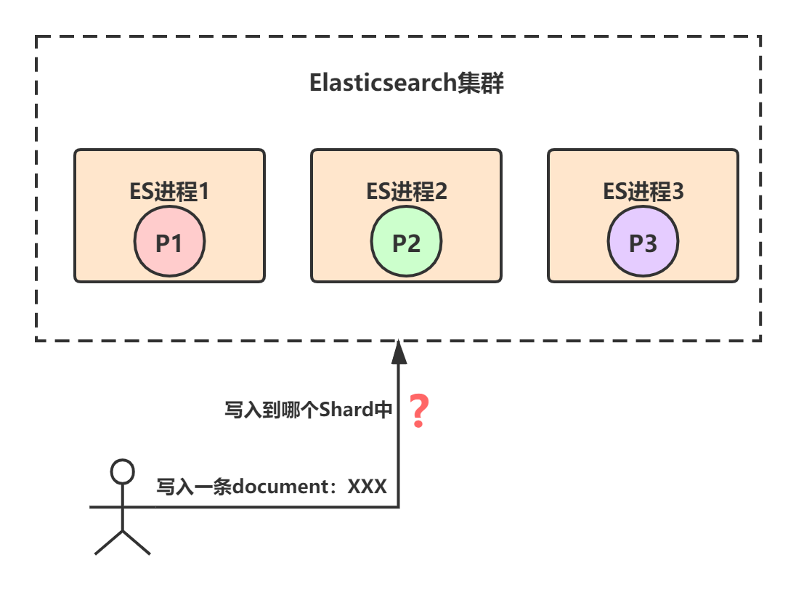
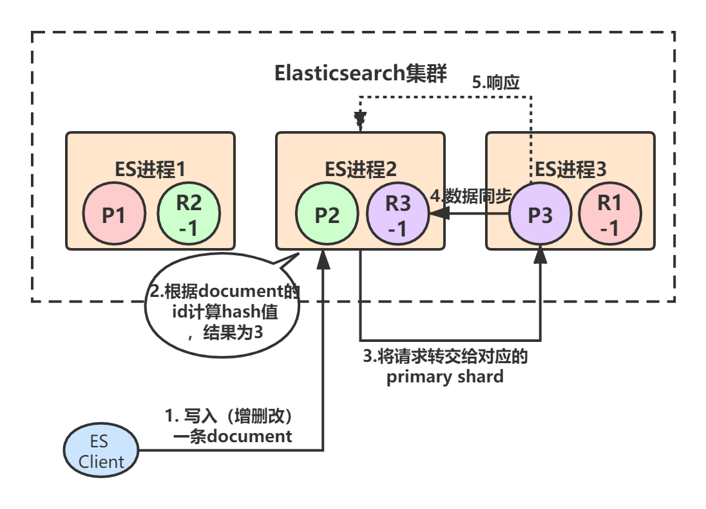
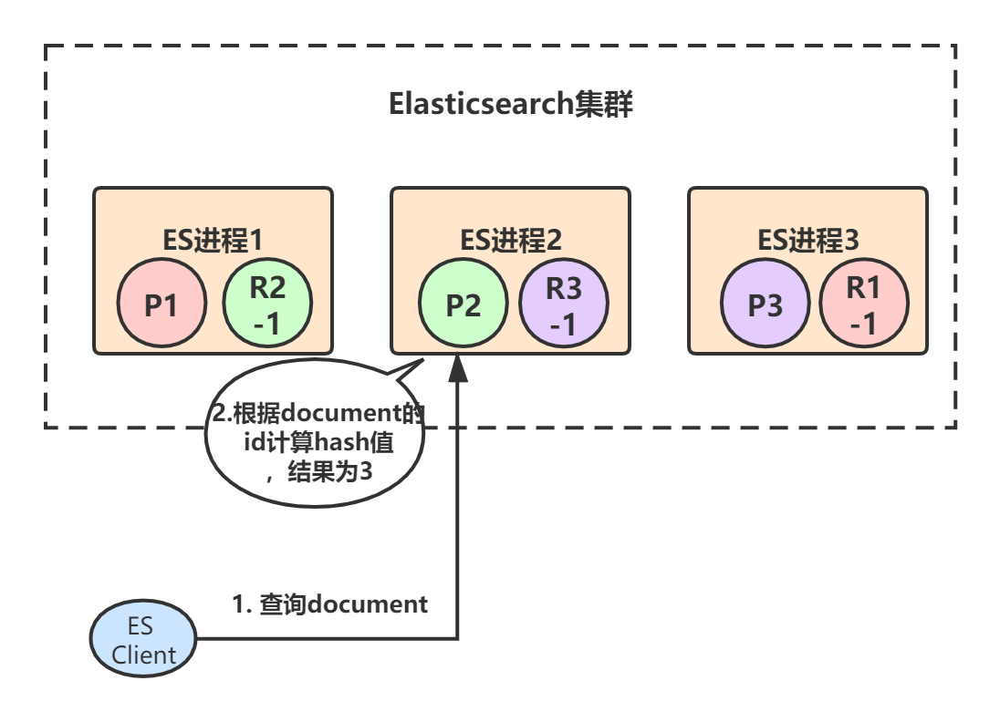
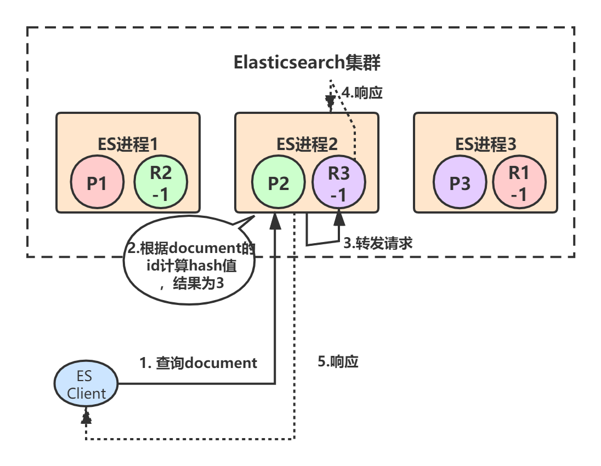

分布式进阶（八）——分布式框架之高性能：Elasticsearch架构
本章，我将从分布式系统的几个核心要点去讲解Elasticsearch的基本架构。通过本章的学习，我们会看到，分布式框架的很多架构设计理念都是相通的，无外乎就是围绕着高可用、可扩展、高性能、数据一致性这四方面展开的。
一、基本架构
1.1 进程节点
我们在生产环境部署Elasticsearch时，都是一台机器上启动一个Elasticsearch进程实例，比如我们有三台机器，那么三个ES进程实例就构成了一个ES集群，每个实例我们把它叫做一个节点：

1.2 负载均衡
当我们建立Index索引时，必须指定索引有几个primary shard，以及primary shard的replica shard数量。
比如，创建一个名称为test_index的索引，共有3个primary shard，每个primary shard都有2个replica shard，那总共就是9个shard：
PUT /test_index
{
"settings" : {
"number_of_shards" : 3,
"number_of_replicas" : 2
}
}
test_index索引的数据会被均匀分布到3个primary shard——P1、P2、P3上，而3个primary shard又会被负载均衡到ES节点上。我们现在有三个ES进程节点，那么primary shard的分布就是类似下面这样的，每个ES节点上分布1个primary shard：

每个primary shard都有一个replica shard，replica shard其实就是个数据备份，类似于msater/slave模式中的slave节点。所以6个replica shard也会被负载均衡到各个ES进程节点上，最终的shard分布可能是下面这样的：
上图中，颜色相同的代表一个primary shard和它的所有replica shard，比如对于P1这个primary shard，它有两个replica shard：R1-1和R1-2。
Elasticsearch有一个原则：primary shard和它对应的replica shard不能全部署在同一个节点上，否则节点挂了的话，数据和拷贝都会丢失。
1.3 高可用
Elasticsearch保证集群高可用的方式和大多数分布式框架类似，就是采用主从模式+选举的方式。每个primary shard都有其所属的replica shard作为副本，如果primary shard挂了，就会从所有replica shard中选举出一个新的Leader作为primary shard。
我们以下图的部署来具体看下Elasticsearch是如何保证集群的高可用的：
初始情况下，三个ES进程节点都正常运行，此时集群的状态就是green，也就是完全正常状态。
假设ES进程1节点宕机了，我们来看下整个集群的可用性：
上图中，节点1宕机了，所以对于P1这个primary shard，就是非active状态，此时集群状态转为red。但是节点2和节点3上仍然保存着完整的数据，就算再挂掉一个节点，只剩下一个节点2或节点3，整个集群也还是可用的。
当集群状态变为red后，P1的两个副本——R1-1和R1-2就会开始一轮选举，胜出者成为新的primary shard，比如我们假设R1-1胜出：

选举完成后，test_index索引的三个primary shard都是存活的，但是P1只有一个repilca shard是active状态，所以此时集群的状态变成yellow。
最后，当宕机的那个节点1恢复后，上面的shard又会重新加入到集群中，原来的P1发现节点2上已经有了新的primary shard，自己就会变成repilca shard，并进行数据同步：

1.4 可扩展
Elasticsearch实现水平扩展的方式就是数据分散集群模式，也就是数据分片。
一个索引的数据会被均匀分布到它的primary shard中，比如test_index索引一共有3T的数据，那么每个primary shard就有1T数据。replica shard是primary shard的副本，所以也包含1T数据，此时集群的情况可能是下面这样的：

如果每个ES节点的磁盘容量总共也就3T多怎么办？此时所有节点的磁盘都几乎撑满了。
Elasticsearch可以透明的实现节点水平扩展，只要再找台机器，启动一个Elasticsearch进程，将其加入到当前集群中，那么上面的shard重新在节点上自动均匀分布。比如我们再加三台机器：

通过这种方式，最多可以加到9台机器，刚好对应9个shard：

二、路由原理
在Elasticsearch中，记录是以document为单位存储在shard上的。比如，一个名称为test_index的索引，共有3个primary shard，那么对于任意一条document记录，只能存在于其中的某一个primary shard上，如下图（为简便起见，省略了replica shard）：

那么，问题来了，对于任意一条document记录，到底该分配到哪个shard上呢？
2.1 数据路由
如果读者看过我的《分布式系统从理论到实战系列》，那么对分布式系统中的这种数据分散集群下的数据路由一定不会陌生。
事实上，Elasticsearch就是采用了hash路由算法，对document记录的id标识进行计算，产生了一个shard序号，通过这个shard序号就可以立即确认写到哪个shard里面。
举个例子，假设我们往test_index这个索引里面写入了一条document记录（id=1024），然后按照路由算法shard = hash(routing_key) % number_of_primary_shards，计算出shard=1，那么就写到序号为1的那个primary shard中。
我们也可以手动指定document的routing_key值，那么routing_key相同的document就会路由到同一个shard中。
2.2 数据写入
了解Elasticsearch进行数据路由的基本原理，我们就来完整的看下document写入（增删改）的整个流程，以便大家整个数据路由过程有个更清晰的认识。
假设我们ES集群是下面这个样子的，3个primary shard，每个primary shard都有一个副本。初始时，客户端（集成了Elasticsearch Client SDK）发起了一条document的写入请求，请求可能hit到任意某个ES节点上，hit到的这个节点也叫做coordinate node（协调节点）：

由于ES进程1、2、3构成了一个集群，所以每个ES节点其实都知道集群中的其它节点的信息，包括集群中一共有多少primary/replica shard，每个节点上分配着哪些primary/replica shard。
假设ES进程2节点（协调节点）接受到了请求，于是根据document的id进行hash计算，发现结果是3，也就是应该由P3这个primary shard处理这个请求，所以就会把请求转发给ES进程3节点上的P3：
primary shard 3处理完请求后，会将数据同步到自己的replica shard（R3-1），同步完后响应ES进程2：

最后，ES进程2（协调节点）收到响应后，返回给ES client结果：

从上述流程也可以看出，Elasticsearch对于写请求，最终都是转交给primary shard去处理的。
2.3 数据查询
document数据查询的原理基本和写入类似，只不过查询请求既可以由primary shard处理，也可以由replica shard处理，这样就提高了系统的吞吐量和性能。
coordinate node（协调节点）在接受到查询请求后，会采用round-robin算法，在对应的primary shard及其所有replica中随机选择一个发送请求，以达到读请求负载均衡的目的。
我们继续通过流程图来看，首先客户端发起查询某个document的请求，假设命中到ES进程2，ES进程2根据document Id计算出应该由primary shard 3来处理：

primary shard 3有一个replica，所以协调节点会采用round-robin算法选取其中一个转发请求，比如选择了R3-1，然后将请求转发给它，R3-1查询得到结果后返回，最终ES进程2将结果返回给客户端：

三、总结
本章，我们对Elasticsearch的基本架构进行了讲解，后续章节深入其底层实现细节。另外，Elasticsearch的这种路由机制其实就是把每个节点都看成是对等数据路由中心。事实上，在很多开源分布式框架中，还有一种做法是引入外部的数据路由中心，比如Zookeeper，或者像RocketMQ那样自己实现一个路由中心——NameServer，感兴趣的童鞋可以看看我写的《分布式系统从理论到实战系列》。